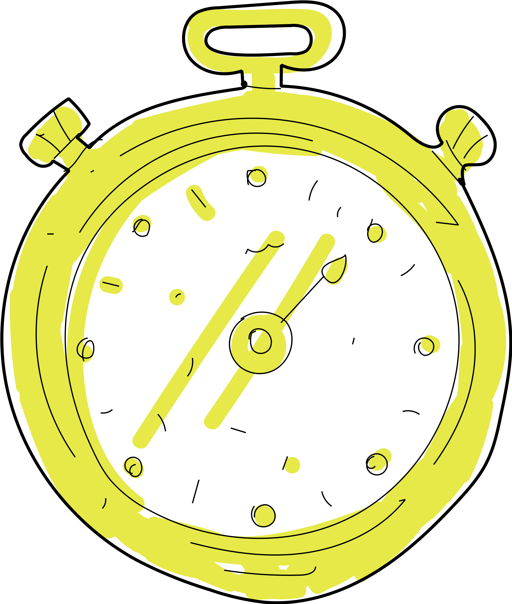

Covid has had an important impact on all our habits, prompting us to create new and intelligent solutions to continue to perform our daily lives in the best possible way. The quarantine limited our movements to the point that our only social relationships place inside our home via videocall. The activities did not stop and neither did the session of the Polytechnic, leaving us with the only possibility to work remotely. So I asked myself: How much time did I spend on videocall during my sessions?
The Idea

Translation
The project aims to describe people’s perception of time: We are not aware of how much time we spent doing repetitive actions. The translation of a specific amount of time in different ways, like read a book or take a trip, lead the user to reflect about the distortion of time.